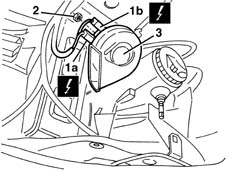

5550B30 l/h or r/h horn (one) - r+r
- Path
- Procedures > 55 ELECTRICAL EQUIPMENT > 5550 MANOEUVRING AND WARNING SIGNALS > 5550B horns > 5550B30 l/h or r/h horn (one) - r+r
- Kind
- repair procedure (removal / refitting; the operation number is the code)
- Applies to
- all engines; all production periods
- Interactive page
- https://sloeber94.github.io/elrnDB-lYpsln/en/#/2429425
Applies to: all engines; all production periods
 Removing
Removing
 Refitting
RefittingPlace the vehicle on a lift.
Raise the car.
1. Working on the front right side of the engine compartment, disconnect horn electrical connections (1a) and (1b).
 | Name | Connector |
|---|---|---|
1a | Horn |
| Name | Connector |
|---|---|---|
1b | Horn |
2. Undo the bolt fixing the horn.
3. Remove the horn.

Applies to: all engines; all production periods
Refitting
RemovingCheck that the horns is not damaged and test their operation.
Refit the horn fixing it using the nut.
Connect the electrical connections .
Lower the vehicle.
Remove the vehicle from the lift.